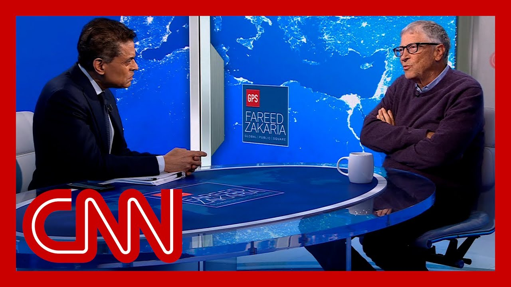

【比尔·盖茨向法里德·扎卡里亚讲述他对特朗普关税的看法】
Summary: Fareed Zakaria interviews Bill Gates about the global and US economy, focusing on the negative impact of Trump's tariffs, economic uncertainty, and tech bans on China. Gates expresses concern about self-imposed tariffs, unpredictability in policy, and how tech restrictions may backfire by accelerating China's self-sufficiency in chip manufacturing.
摘要： 法里德·扎卡里亚采访比尔·盖茨，探讨全球和美国经济，重点关注特朗普关税的负面影响、经济不确定性以及对中国的技术禁令。盖茨对自我强加的关税、政策不可预测性以及技术限制可能加速中国芯片自给自足表示担忧。

⏱️ Estimated Reading Time: 5 min
And we are back with more of my interview with Bill Gates.
我们继续播放对比尔·盖茨的采访。
Let me ask you, what do you think about the state of the the global economy and particularly the US economy?
请问您如何看待全球经济，尤其是美国经济的现状？
Ken Rogoff, a great Harvard economist who I spent some time talking to, says that to him, the worst thing about the US current economic policy is it's all selfish, afflicted and voluntary that in the past we made mistakes.
我曾与哈佛大学著名经济学家肯·罗格夫交谈，他认为当前美国经济政策最糟糕的一点是它完全是自私、痛苦且自愿的，而过去我们犯错时并非如此。
But they were during a big crisis, a great recession, or Nixon facing the problem of, you know, the dollar not being able to be converted to gold or even Smoot-Hawley was after the financial crash of 29, after the Great Recession, trying to figure out what to do.
但过去的错误发生在重大危机期间，比如大萧条，或尼克松面临美元无法兑换黄金的问题，甚至《斯姆特-霍利关税法》也是在1929年金融崩溃后、大萧条期间试图寻找解决方案。
These tariffs we've just imposed on ourselves.
这些关税是我们自己强加的。
How damaging do you think it is?
您认为这有多大危害？
Well, the the big concern I have is we've created a lot of uncertainty.
我最大的担忧是我们制造了很多不确定性。
you know, if you're going to build a new factory, you need to understand the policies for the next 20 years, not just the next two days or even four years.
要知道，如果要建新工厂，你需要了解未来20年的政策，而不仅仅是未来两天甚至四年。
And and so the notion of, okay, what is, the structure, particularly in the a time of AI where the labor substitution, both white collar and blue collar, is going to start to change the economy.
尤其是在人工智能时代，白领和蓝领的劳动力替代将开始改变经济结构。
I think it's a bad time to interject so much uncertainty.
我认为现在注入如此多的不确定性是不合时宜的。
and, this is not a agreed set of things or a carefully discussed, set of things.
而且，这些政策并非经过共识或仔细讨论。
You know, what's going to happen with pharmaceuticals or electronics?
谁知道制药或电子行业会发生什么？
You know, I open the paper every day wondering.
我每天打开报纸都在想这个问题。
so I do worry.
所以我确实担心。
that uncertainty means that investments don't take place.
不确定性意味着投资不会发生。
How worried are you about the future of the US economy?
您对美国经济的未来有多担忧？
You know, I, I think there's a lot of resilience in the US economy.
我认为美国经济有很大的韧性。
you know, we've seen, even with this uncertainty, the jobs numbers have not been that bad.
即使存在这种不确定性，就业数据也没有那么糟糕。
I'm not an expert on that.
我在这方面不是专家。
I mean, another 1 or 2% of growth.
我的意思是，再增长1%或2%。
You know, for me, it's about the cutting edge.
对我来说，关键在于尖端领域。
and saying, okay, can the U.S., stay in the lead?
问题是，美国能否保持领先地位？
And, you know, I do think being friendly to other countries.
我认为对其他国家保持友好很重要。
So they want to, they don't think we're going to withdraw our technology in some, sudden way.
这样他们不会认为我们会突然撤回技术。
That's important.
这很重要。
and then, you know, being an exemplar of, you know, briefly, there were gigantic tariffs on very poor African countries.
此外，成为榜样也很重要——比如之前对非常贫穷的非洲国家征收高额关税。
and, you know, I don't see what the benefit of that would have been.
我看不出那有什么好处。
You know, I'm I'm particularly focused on our role in, in lifting up, those in, in greatest need and the, the potential tariffs would have been particularly, bad for these poor countries.
我特别关注我们在帮助最贫困人群方面的角色，而这些关税对这些贫穷国家尤其不利。
Do you think the tech bans on China are of work or do or do they make for Chinese more determined to come up with their own local versions, as with Deep Sea, as with, you know, with the ascent chip?
您认为对中国的技术禁令有效吗？还是说它们反而让中国更决心开发本土版本，比如深海芯片或昇腾芯片？
I mean, is, is is the bans having, in a weird way, the opposite effect?
这些禁令是否奇怪地产生了反效果？
Oh, absolutely.
哦，绝对是的。
I mean, they've forced the Chinese in terms of chip manufacturing and everything to go full speed ahead.
这些禁令迫使中国在芯片制造等方面全速前进。
Basically, it's very hard.
这其实很难。
And in the world we live in with, you know, open source software and everything.
在我们生活的世界里，有开源软件等等。
The Chinese are not going to get substantially ahead of us, and we're not going to get substantially ahead of the Chinese.
中国不会大幅领先我们，我们也不会大幅领先中国。
The AI technologies will be available to the world, and people can build on those.
人工智能技术将向全球开放，人们可以在此基础上发展。
in, in their own way.
以他们自己的方式。
The notion that it was going to be super unique to us, we, you know, we made clear to them that they needed to make their own chips, and they they're making great progress on on doing that.
认为技术会完全属于我们是错误的——我们明确告诉他们需要自己制造芯片，而他们正在这方面取得巨大进展。
All right.
好的。
Bill gates, always a pleasure.
比尔·盖茨，总是很愉快。
Thank you.
谢谢。